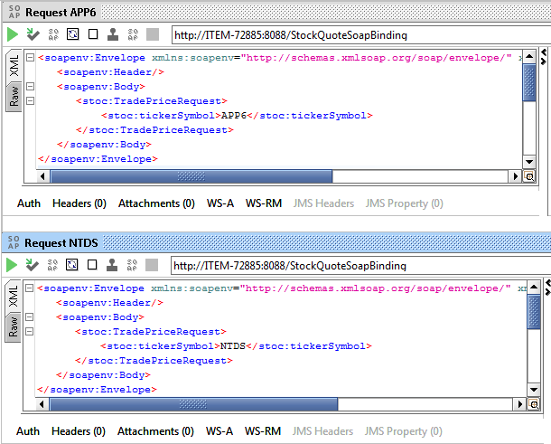
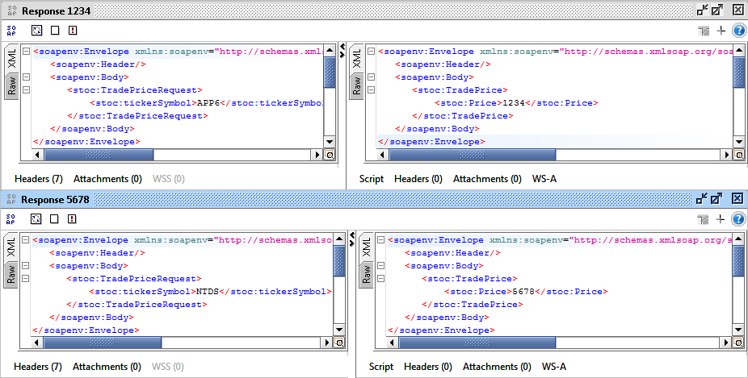
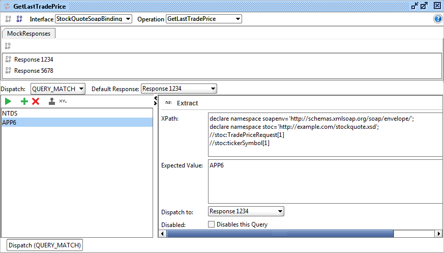
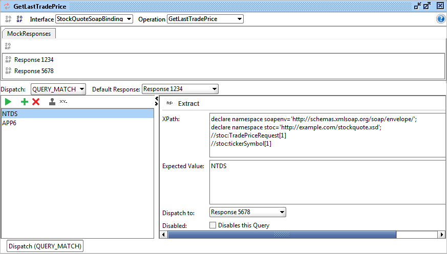
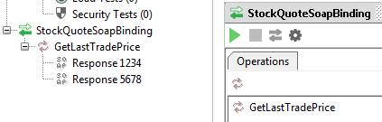
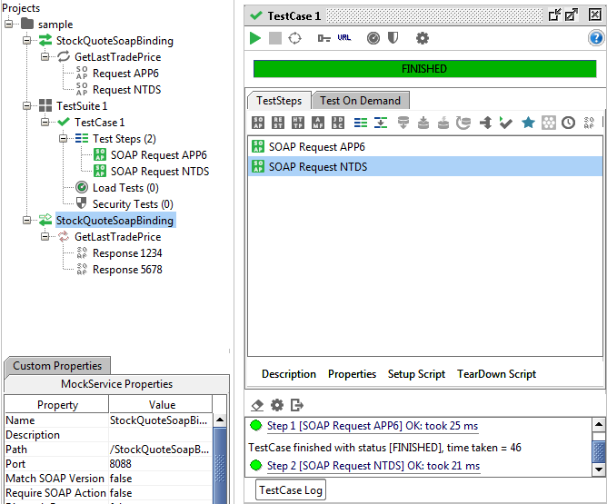

SOAP: tests automatisés
Dans cet article je vais, au travers d’un exemple, utiliser soapUI pour effectuer toutes les étapes nécessaires à l’élaboration de tests automatisés : tests unitaires en intégration continue. Nous allons donc mettre à l’épreuve soapUI dans le but de créer une suite de tests automatisés...
Vous allez utiliser le fichier WSDL d'exemple
Etape 1: création de deux requêtes (avec les valeurs "APP6" et "NTDS" dans notre exemple).
Etape 2: création des deux réponses (avec les valeurs "1234" pour "APP6" et "5678" pour "NTDS").
  Etape 3: démarrer le bouchon de l'étape 2.
Etape 4: création de la suite de tests (avec l'execution des deux requêtes et la vérification des deux réponses).
Vous pouvez utiliser le projet SOAPUI